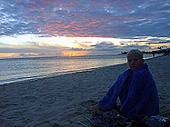
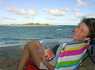

|
Waikiki ****
Besøkt: 18. august 1999
Vi var der: Ola, Lars, Anders, Siri og Arne
Om turen: Waikiki er Hawaii's Copacabana og en av verdens mest berømte strender. Langs standa ligger en rekke med skyskrapere hvor turister og rike fastboende holder til. På strandpromenaden og i gatene som går ned til den, yrer det av alle slags aktiviteter som er knyttet til turisme.
Stranda er rein og fin, selv om den er nær bebyggelsen. Det er rolige områder bak bølgebrytere og områder for surfing ved siden av.
Anders og Lars så endel fisk der selv om de ikke hadde dykkermaske. Så området er er fint for snorkling. Men mest synlig er boogie boardingen. Vi bare svømte rundt og lekte i vannet, for vi hadde ennå ingen boogie board.
|
|  |

|
Solnedgangen ved Ala Moana er vakker. Ola har avsluttet badinga for i dag.
|
Ala Moana ***
Besøkt: 17. august, 13.oktober 1999
Vi var der: Ola, Lars, Anders, Siri og Arne
Om turen: Ala Moana ligger enda nærmere sentrum i Honolulu enn Waikiki. Ala Moana er kanskje mest kjent for et enormt shoppingsenter som ligger rett ovenfor stranda. Det hevdes å være verdens største i sitt slag, delvis utendørs.
|
Ala Moana er en bystrand, omkranset av palmer og skyskrapere.
|
Stranda er fin og rolig, men det finnes (ifølge boka) også muligheter for de som ønsker å boogie boarde. Vi var der en rolig ettermiddag/kveld. Her var det ikke noe fisk å se, men her var det gullfiskere. Folk utstyrt med metallsøkere og håver undersøkte både strand og havbunn. Og de fant gull! Vi fikk se fangsten til en: Masse gullringer og sølvringer, sannsynligvis mistet av rike(?) turister.
Ala Moana er et fredelig område nesten midt i byen. Vi har sett oss ut fine grillplasser som vil skal prøve ut. Men først må vi skaffe oss grill....
|
| |
|
Stien ned til bukta er bratt og svingete, men asfaltert.
|
Hanauma Bay *****
Besøkt: 20. august, 27. september, 3. og 7. oktober, 4. november 1999
Vi var der: Ola, Siri og Arne (20/8), Ola og Siri (27/9), Ola, Lars, Anders, Siri, Arne, Helge og Ragnhild (Reinertsen). Arne og Bjørn (Hersoug) 4/11.
Om turen: Dette er Hawaii's mest berømte snorklingssted. Det var Elvis som gjorde den idylliske bukta kjent, etter å ha brukt den i en sine mange filmer (på 50-tallet?).
|
Anders og Siri snakker med Ragnhild.
|
Vi dro der en ettermiddag, litt på måfå rett etter å ha kjøpt bil. Normalt koster det å entre stranda, men siden vi var så seint ute, kom vi gratis inn. Vi hadde ikke med oss dykkermasker, men Ola så en masse fisk med svømmebrillene sine.
Hanauma bukta er egentlig restene av et krater. Bukta er grunn og en mengde koraller gjør det vanskelig å svømme uten at magen treffer koraller. Til forskjell fra Sharks Cove, hvor det blir svære bølger i vinterhalvåret, er det mulig å snorkle i Hanauma bukta hele året.
3. oktober var det første ordentlige besøk. I billettluka måtte vi sannsynliggjøre at vi bodde i Honolulu for å slippe å betale. Lars reddet oss med sitt ID kort fra skolen. Med oss på stranda var en norsk familie vi har truffet her nede, Helge og Ragnhild. Helge er på UH akkurat som Arne.
Hanuama Bay er et fantastisk sted. Denne gang svømte vi i stimer av store fisk. Fargene på fiskene er sterke og fasinerende. Vi må finne en måte å formidle dette på. Anders jobber med å systematisere hva vi har sett.
|
| |
|
Alt vi har bilde av er isspisingen etter ha sett all verdens korallfisker. Vi har ikke undervannskamera.
|
Sharks Cove *****
Besøkt: 21. og 28. august 1999
Vi var der: Ola, Lars, Ryuhei, Anders, Siri og Arne
|
Anders med blå tunge etter å ha spist vaniljeis!
|
Om turen: Sharks Cove er ei lita bukt i nord, ingen sandstrand, men likevel en mye besøkt badeplass. Her møter du skikkelige dykkere, en masse snorklere og noen harpunfiskere. Arne fikk låne dykkermaske med innmonterte brilleglass av en nabo, faren til Ryuhei som var med oss. Ryuhei er like gammel som Lars. Han er født og oppvokst i Japan og flyttet til Hawaii for tre år siden. Da kunne han ikke noe engelsk.
Sharks Cove er en fantastisk snorkleplass. Der er du garantert å se haugevis med fisk, fiskestimer med hundrevis av fisk svømmer rundt deg. Det er små og store fisk, vi så noen skikkelige rugger. Mange er svært fargerike. Dette var moro!
Første gang så ungene en svær laguster (en slags hummer) som var død. Den hadde fine farger og lå nede i et hull i korallene.
|
| |
|
Siri på stranda i Waimanalo.
|
Waimanalo ***
Besøkt: 21. august og 5. september 1999
Vi var der: Ola, Lars, Anders, Siri og Arne
Om turen: Dette er en lang, flott sandstrand langs vestkysten av Oahu. Det er fine boogie boarding plasser og korallrev hvor det er fint å snorkle. Deler av stranda ligger svært nær hovedvegen, men store trær langs stranda gjør at dette ikke er sjenerende.
Waimanalo stranda ligger i et område som er kjent som et tradisjonelt Hawaii-kultur område. Stranda benyttes av folk som bor i området. Mange telt er satt opp langs stranda. Siden stranda er så lang, er det alltid god plass.
|
| |
|
Advarsel settes opp når portugisiske krigsskip (brennmaneter) er i farvannet. 26. september var dette skiltet satt opp, men mange badet likevel (vi også).
Foto: Ola
|
Bellows ****
Besøkt: 6. og 26. september 1999
Vi var der: Ola, Lars, Ryuhei, Anders, Siri og Arne
Om turen: Engentlig er Bellows bare en del av den lange Waimanalo-stranda. Bellows er militært område og er bare åpent for allmenheten i helgene. Men det er jo topp, det er jo da vi har tid!
Bellows er en perfekt strand for nybegynnere i boogie boarding. Og det var vi. Men nå kan vi boogie boarde, alle sammen. Vi har kjøpt vårt eget board og låner andre av gode naboer. Å suse avgårde på boogie boardet er fantastisk gøy.
I likhet med alle andre strender rundt Oahu, er også denne utsatt for invasjoner av Portuguese man-of-war, den fryktede brennmaneten. Vi har ikke blitt brent ennå, men med vårt aktivitetsnivå på strendene, kommer det vel til å skje før eller senere. Det er imidlertid badevakter på de fleste strendene og de er blant annet utstyrt med eddik som de spruter på der brennmatentrådene har truffet huden.
|
| |
|
Siri og Lars mater en svær havskilpadde med sjøgrass.
|
Laniakea ****
Besøkt: 4. og 23. oktober 1999
Vi var der: Anders og Siri (4/10), Ola, Lars, Siri og Arne (23/10)
Om turen: Dette er egentlig ingen badestrand, men et populært surfeområde. Bølgene her North Shore er kjent i surfemiljøet. Særlig vinterstid er bølgene svære her. I år avvikles vverdensmesterskapet i surfing her.
Men de siste par årene har den nordlige delen av Laniakea også blitt kjent for sin nyetablerte skilpaddekoloni. Skilpaddene er utrolig tamme og like store som den havskilpadda dere kan se på Tromsø Museum.

|
Siri ser Goat Island i det fjerne, etter å ha vendt tilbake fra ekspedisjonen dit.
|
Goat Island **
Besøkt: 30. oktober 1999
Vi var der: Ola, Lars, Anders, Siri og Arne
Om turen: Badestanda er vel egentlig ikke den beste, det finnes bedre strender både sør for og nord for denne (egentlig er alt samme stranda). Men her er det en spennende øy: Goat Island. Det er ganske grunt vann, så en kan vasse ut til øya. Men det var bare Lars av oss som hadde badesko. Vi andre skar oss til blods på føttene etter å ha vandret på koraller ut til øya. Det var mange steder for grunt til å svømme.
Øya er heller ikke så enkel å spasere på barbeint. Lavastein kan også være ganske skarp. Men øya er et fuglereservat, med tillitsfulle fugler (albatross?) i reir delvis under bakken. Øya er variert, med fine bukter og smult farevann på den ene siden og opprørt hav og utvaskede fjellformasjoner på den andre siden.
|